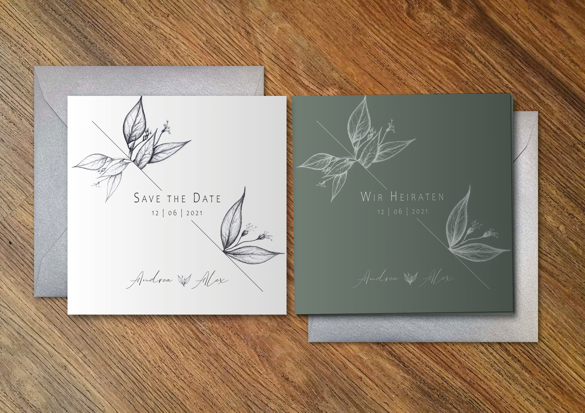

Designvorschläge
Hier findest du alle meine aktuellen Designs. Hier kannst du Inspirationen sammeln oder auch gerne ein Design für deinen Anlass heraussuchen und wir verwenden dies als Basis um Einladungen, Menükarten oder sonstige Druckprodukte zu gestalten. Dazu schick mir bitte eine Mail mit deinem Designwunsch und dem Anlass. Im Anschluss erhältst du eine Übersicht von mir mit den verschiedenen Druckformaten und den Gestaltungspaketen.
Designmuster 1


Designmuster2